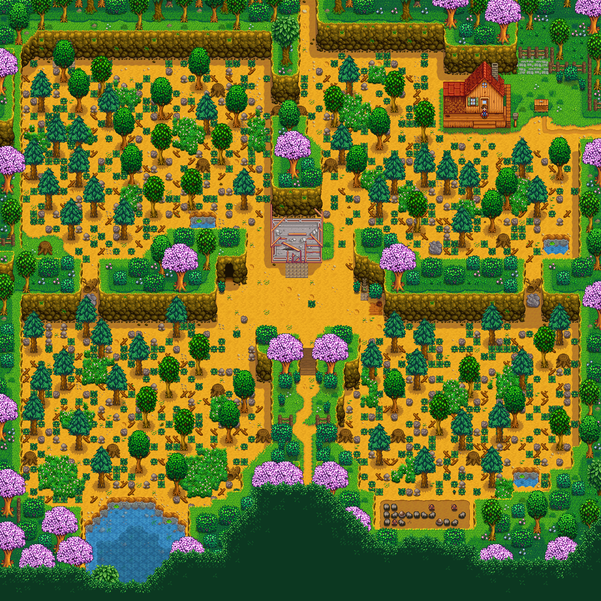
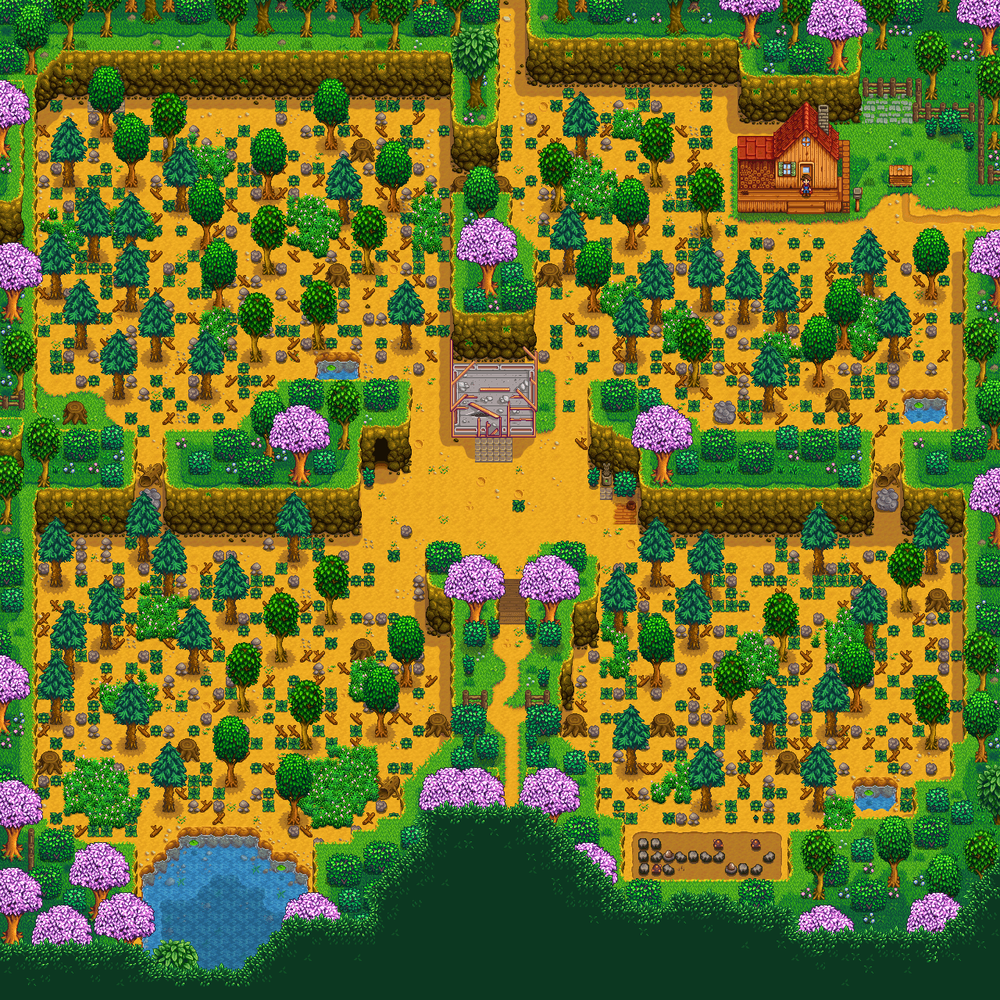

Web Presentación Stardew Valley Alan Alcañiz
GRANJA
En Stardew Valley, puedes elegir entre varias configuraciones de granjas al inicio del juego, cada una adaptada a diferentes estilos de juego:
- Granja Estándar: Ideal para quienes desean enfocarse en cultivar y generar ingresos a través de la agricultura. Tiene mucho espacio para sembrar.
- Granja del Río: Perfecta para pescadores, con áreas de agua amplias que facilitan la pesca, pero con menos espacio para cultivos.
- Granja del Bosque: Ofrece recursos adicionales como madera y resina, con zonas específicas para recolectar forraje.
- Granja de la Colina: Diseñada para quienes disfrutan de la minería, con pequeñas áreas donde puedes encontrar rocas y minerales.
- Granja Salvaje: Llena de monstruos por la noche, ideal para jugadores que prefieren un toque de combate en su experiencia.
- Granja Cuatro Esquinas: Dividida en secciones que combinan características de las otras granjas, pensada para multijugador.
- Granja de Playa: Un desafío adicional con espacios limitados para cultivos regulares, pero ventajas únicas para pescadores y recolectores.

 
